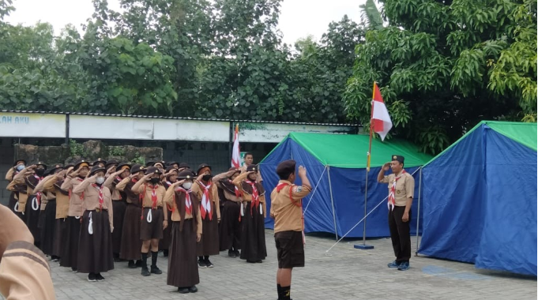
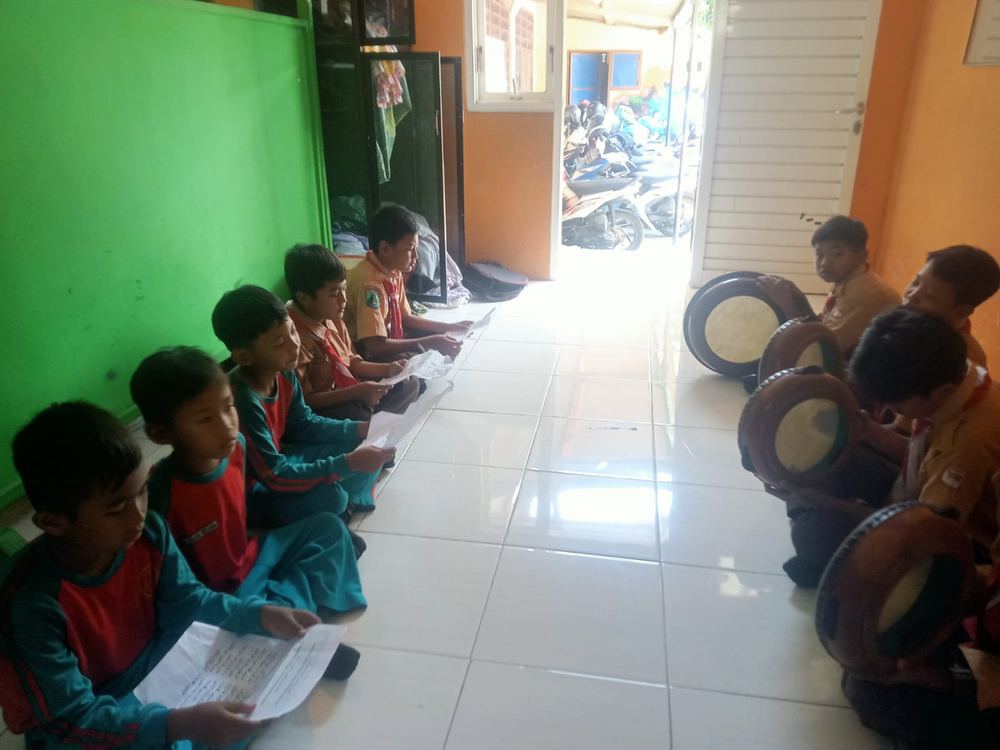
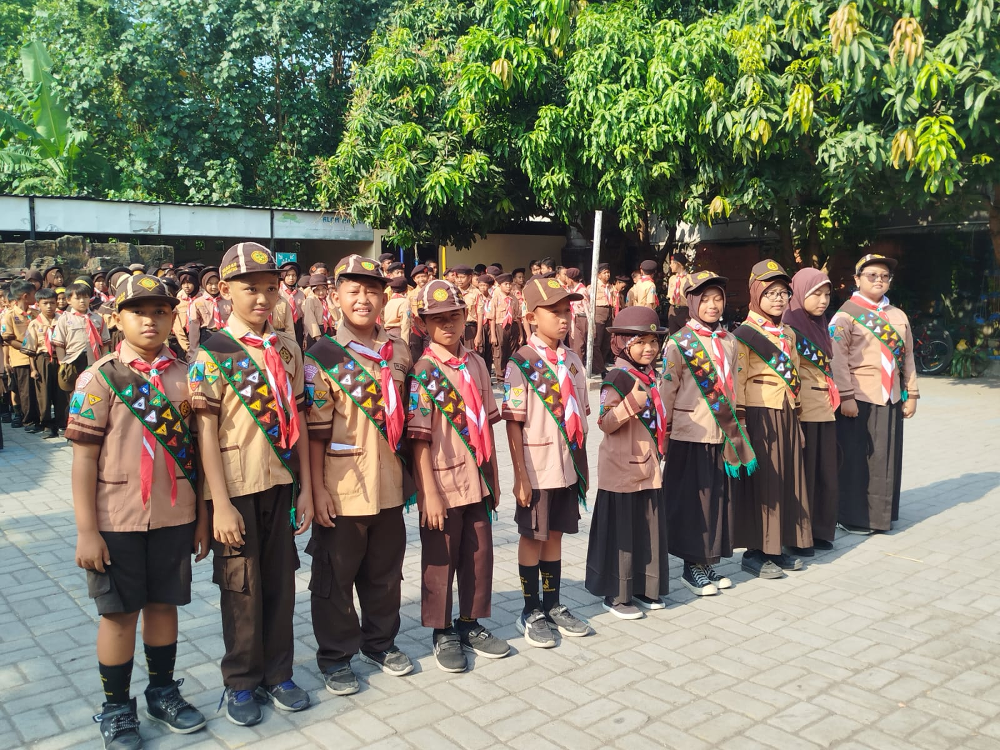
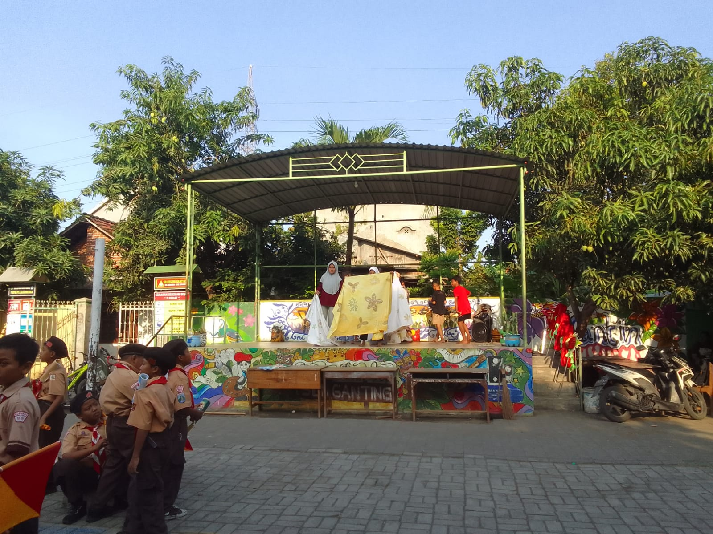
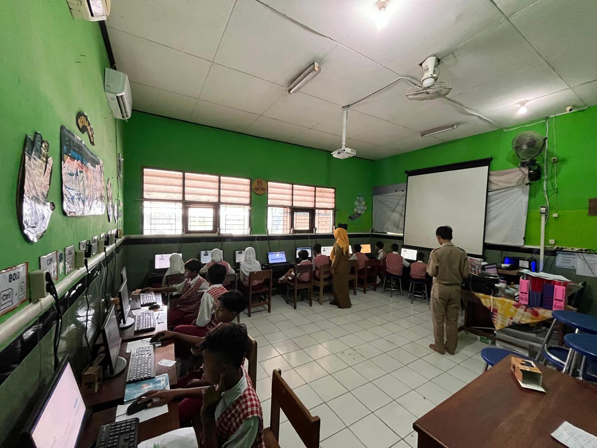
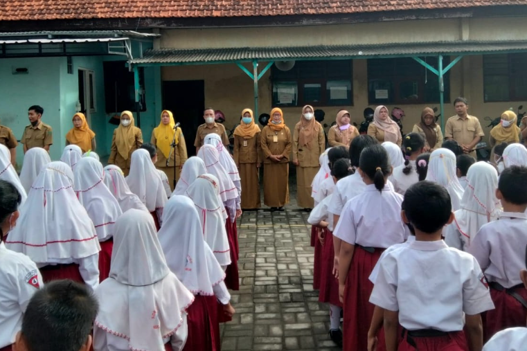
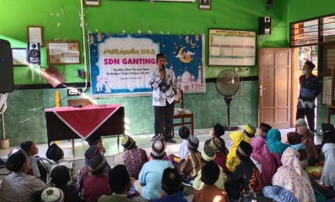

Kegiatan Ekstrakurikuler
Wadah pengembangan minat dan bakat siswa di luar jam pelajaran.





Ruang Prestasi
Apresiasi untuk siswa-siswi berprestasi yang mengharumkan nama sekolah.

Akademik
Juara 1 Olimpiade Matematika
Berhasil meraih medali emas tingkat provinsi Jawa Timur.
Andi Pratama (5A)

Olahraga
Medali Perak Taekwondo
Kejuaraan Nasional Junior yang diselenggarakan di Jakarta.
Siti Aisyah (6B)